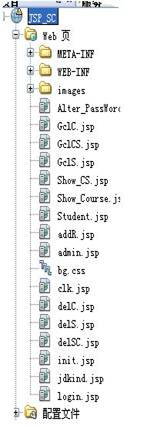
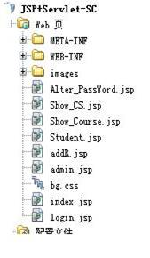
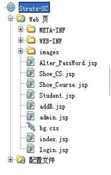

用JSP做过小型项目的学者，可能会产生疑问：采用JSP或者JSP+Servlet完全可以实现所需要的功能，Struts不就是画蛇添足了吗？
难道Struts的出现真的是多此一举了?笔者对此深表怀疑，并愿意和读者分享一下自己的学习和探索过程！
在前边，假若读者有心跟随笔者走过了JSP和servlet的整个学习过程，那么我们可以仔细的回忆一下，这两种程序设计中，页面间代码的耦合度很高！单就JSP来说，视图层和业务逻辑处理层，全混合在html中，页面间重复的代码很多而且JSP页面特别的多（有些页面完全不是视图的形式存在，只是处理其他页面的内容，使页面间相互的通信）。JSP+Servlet初步体现了MVC1的结构，把视图层和业务逻辑层分离开了，大量的减少了JSP页面，将纯处理事件全部用servlet来处理了。表面上在web显示页面上，JSP+Servlet和Struts是好像差不多，然而当先进的MVC2出现后，它也该推出历史的舞台了。在此请读者和笔者都保留着好奇心，我们共同来从以下几个方面来逐一探索开头那个问题！
下图是笔者在实际的学生选课系统中，显示层的文件截图：

JavaServer Pages（JSP）是一种实现普通静态HTML和动态HTML混合编码的技术。许多由CGI程序生成的页面大部分仍旧是静态HTML，动态内容只在页面中有限的几个部分出现。但是包括Servlet在内的大多数CGI技术及其变种，总是通过程序生成整个页面。JSP使得我们可以分别创建这两个部分。例如，下面就是一个简单的JSP页面：
＜!DOCTYPE HTML PUBLIC "-//W3C//DTD HTML 4.0 Transitional//EN"＞
＜HTML＞
＜HEAD＞＜TITLE＞欢迎访问网上商店＜/TITLE＞＜/HEAD＞
＜BODY＞
＜H1＞欢迎＜/H1＞
＜SMALL＞欢迎，
＜!-- 首次访问的用户名字为"New User" --＞
＜% out。println(Utils。getUserNameFromCookie(request))； %＞
要设置帐号信息，请点击
＜A HREF="Account-Settings。html"＞这里＜/A＞＜/SMALL＞
＜P＞
页面的其余内容。。
＜/BODY＞＜/HTML＞
拓展知识：
下面是JSP和其他类似或相关技术的一个简单比较：
JSP和Active Server Pages（ASP）相比
Microsoft的ASP是一种和JSP类似的技术。JSP和ASP相比具有两方面的优点。
首先，动态部分用Java编写，而不是VB Script或其他Microsoft语言，不仅功能更强大而且更易于使用。
第二，JSP应用可以移植到其他操作系统和非Microsoft的Web服务器上。
JSP和纯Servlet相比
JSP并没有增加任何本质上不能用Servlet实现的功能。但是，在JSP中编写静态HTML更加方便，不必再用 println语句来输出每一行HTML代码。更重要的是，借助内容和外观的分离，页面制作中不同性质的任务可以方便地分开：比如，由页面设计专家进行HTML设计，同时留出供Servlet程序员插入动态内容的空间。
JSP和服务器端包含（Server-Side Include，SSI）相比
SSI是一种受到广泛支持的在静态HTML中引入外部代码的技术。JSP在这方面的支持更为完善，因为它可以用Servlet而不是独立的程序来生成动态内容。另外，SSI实际上只用于简单的包含，而不是面向那些能够处理表单数据、访问数据库的“真正的”程序。
JSP和javascript相比
javascript能够在客户端动态地生成HTML。虽然javascript很有用，但它只能处理以客户端环境为基础的动态信息。除了Cookie之外，HTTP状态和表单提交数据对javascript来说都是不可用的。另外，由于是在客户端运行，javascript不能访问服务器端资源，比如数据库、目录信息等等。
笔者在实践中总结的纯JSP的缺点：
代码的重用问题：
在我们编写程序的时候，需要经常访问数据库进行数据验证，或读取数据。如果在你所写的程序中，有很多JSP页面需要直接访问数据库，当数据库表名，或者是字段发生改变时候，你所要改动的页面有多少？如何避免类似的问题？
对于这个问题，我们在用JSP实现时，可以通过OOP（面向对象的程序设计）思想的方式进行解决。我们创建一个数据库访问类，在类中再创建一个访问用户表的方法，在需要访问用户表的JSP页面中调用该方法。如果用户表发生改变，我们只需要修改该方法，对于其他的JSP页面毫无影响。其实这些问题早被java编程大鸟解决了，java web 框架struts和hibernate，尤其是hebernate等可以很好的解决该问题。以后我们会专门来讲解hibernate篇。
页面的维护的问题：
当构建一个项目的时候，必须考虑到美工美化界面的问题。如果你在JSP中实现所有的操作，美工就会一头雾水。在你的程序功能实现后，所有的页面都需要美工来进行美化，但是美工一般都不懂Java代码，怎么办？
如果美工要对这个页面进行美化，而他又不懂JSP，他所想的就是在页面上尽可能少的出现Java代码，将流程控制和数据显示分离。这样他就可以很好的完成美化页面的工作了。
也就是在JSP页面中只是显示数据，有关程序控制的功能，由Servlet来完成。当然，最简单的方法还是前人开拓出来的使用的框架struts和hibernate等。
由于Servlet是用Java编写的，所以它与生俱来就有跨平台的特性，因此Servlet程序的设计完全和平台是无关的，同样的Servlet完全可以在Apache，IIS等不同Web服务器上执行，不管底层的操作系统是Windows，Solaris，Mac，Linux还是其他的能支持Java的操作系统。
Servlet是跟普通的Java程序一样，是被编译成字节码后由JVM执行的。相比传统的CGI，
尽管CGI是用本地代码直接执行的，但是由于每次客户端发出请求，服务器必须启动一个新的程序来处理请求，这就把高负载强加给了服务器资源，尤其如果CGI使用脚本语言编写时，如perl，服务器还必须启动语言解释程序，程序越多，占用的内存就越多，消耗CPU也越多，严重影响系统性能。
Servlet运行于Servlet引擎管理的Java虚拟机中，被来自客户机的请求所唤醒，与CGI不同的是，在虚拟机中只要装载一个Servlet就能够处理新的请求，每个新请求使用内存中那个Servlet的相同副本，所以效率比CGI来得高。如果采用服务器端脚本，如ASP，PHP，语言解释程序是内置程序，因此可以加快服务器的运行，但是效率还是比不上准编译的Servlet。实际的使用也已经证明，Servlet是效率很高的服务器端程序，很适合用来开发Web服务器应用程序。Java Servlet有着十分广泛的应用。不光能简单的处理客户端的请求，借助Java的强大的功能，使用Servlet还可以实现大量的服务器端的管理维护功能，以及各种特殊的任务，比如，并发处理多个请求，转送请求，代理等。
笔者的在实践中总结的JSP和Servlet优劣：
JSP是服务器脚本语言，利用它可以方便地控制页面的展现，同时也能进行逻辑处理，而Servlet是传统Java语言，可以使用Java所有的功能。
的确，从实现逻辑上来讲，基本上Servlet能够实现的逻辑，JSP也能够实现，而且JSP还不用编译，修改起来十分方便。虽然JSP不能定义方法，但我们也可以写一个普通Java类来实现相关的工具方法，让JSP调用。过去有人说Servlet可以动态生成图像，而事实上JSP同样能够做到。看起来Servlet似乎要被淘汰了。
但是，我理解的JSP相比Servlet最大的不足在于：
首先，JSP无法实现继承，它不是一种面向对象的语言，使用JSP，又回到了面向过程的老路上。当上层逻辑发生改变时，我们无法通过修改基类来实现整体的转变，而当需求发生扩展时，我们只能修改JSP代码，用一连串的IF。。。ELSE，而不能通过继承（extends，也许翻译成扩展更为合适）来实现，它不符合“对修改关闭，对扩展开放”的面向对象设计思想。
其次，JSP逻辑和表现层无法做到分离，将两者混为一潭的局面对较大点项目确实无法展开。
随然，用JSP来控制展现层是十分方便和快捷的，但是如果要实现复杂和多变的逻辑，用Servlet更为合适。事实上，这也是Java所倡导的，请求首先由Servlet来处理，而处理结果forward到JSP上来展现。Struts、Spring这些框架也正是采用了这种方式。
Struts跟Tomcat、Turbine等诸多Apache项目一样，是开源软件，这是它的一大优点。使开发者能更深入的了解其内部实现机制。 struts实际就是实现了mvc的机制，切实可行的把控制和显示分开，从管理上来说可以节省不必要的时间和人力的浪费。提高了开发速度。也真正的实现了bean的重用。
除此之外，Struts的优点主要集中体现在两个方面：Taglib和页面导航。Taglib是Struts的标记库，灵活动用，能大大提高开发效率。另外，就目前国内的JSP开发者而言，除了使用JSP自带的常用标记外，很少开发自己的标记，或许Struts是一个很好的起点。
关于页面导航，我认为那将是今后的一个发展方向，事实上，这样做，使系统的脉络更加清晰。通过一个配置文件，即可把握整个系统各部分之间的联系，这对于后期的维护有着莫大的好处。尤其是当另一批开发者接手这个项目时，这种优势体现得更加明显。